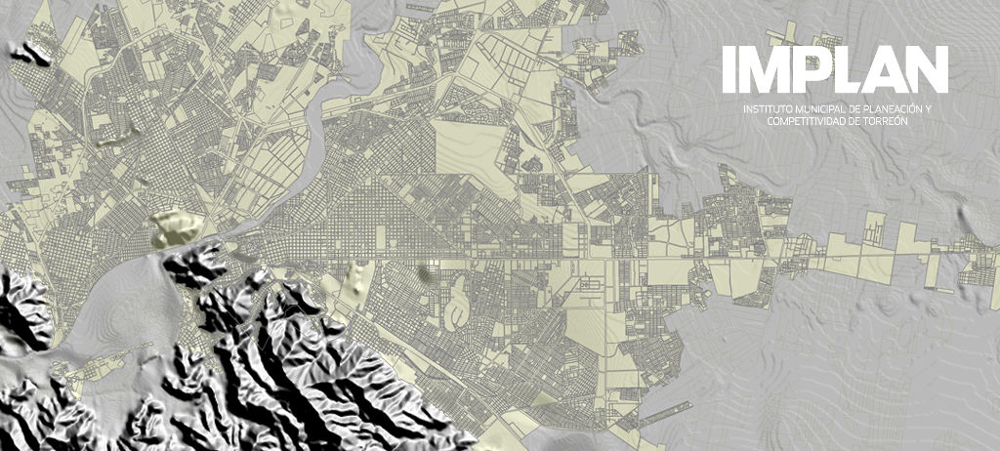
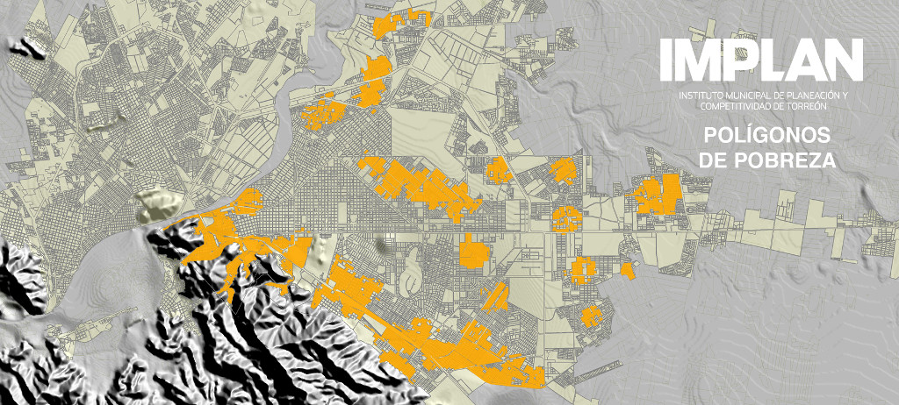

Un Sistema de Información Geográfica (SIG) más que una importante herramienta tecnológica es una estructura de personas y equipos computacionales dedicados a la recopilación, procesamiento, almacenamiento y análisis de datos con información valiosa para una adecuada toma de decisiones.
La base de datos integrada al SIG, permitirá representar visualmente variables muy diversas (estadísticas, infraestructura, equipamiento, programas, proyectos) de distintas fuentes (imágenes de satélite, INEGI, CONEVAL, IMCO, IMPLAN y dependencias municipales) generando mapas de análisis, temáticos o informativos con datos de utilidad que permitan impulsar la competitividad de la ciudad y la zona metropolitana mediante la planeación a corto, mediano y largo plazo.
La principal característica de este sistema es que está diseñado para ser una herramienta que permita el acceso a la ciudadanía como medio de consulta de información de la situación del municipio y de la zona metropolitana.

